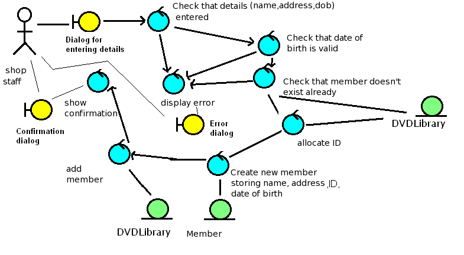
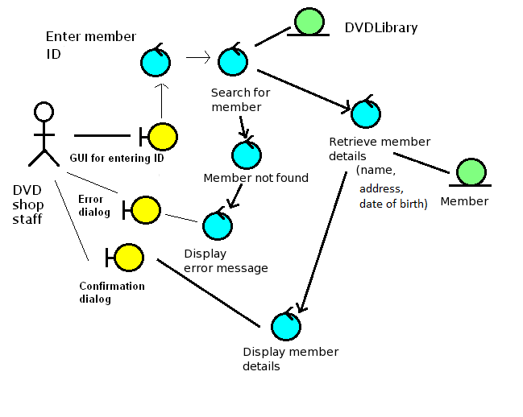

Robustness Diagrams
Page 1
Robustness Diagrams
- What are robustness diagrams?
- Why are they used?
- Robustness diagram notation
Page 2
Bridging the gap between Analysis and Design
- Use case texts analyse the application from a user interaction point of view
- We can also bring in classes from the domain model in a more detailed use case text
- However they still do not quite contain enough information to move
to full design of the system
- This is because they are orientated towards user-system interaction, not design of code constructs such as classes and objects, methods and attributes
Page 3
Robustness Diagrams
- An alternative, graphical way to depict the use cases
- Helps you think about how the steps of the use case will interact with the domain model classes
- It also enables you to discover new classes in the system
Page 4
Robustness Diagram Notation

- Boundary Objects: Represent interaction between the user and the system, e.g. GUI elements, web forms
- Entity Objects: Represent classes within the system, e.g. DVDLibrary or Member
- Controllers: Represent system actions within the program
Page 5
Robustness Diagram Rules
- Boundary objects can only talk to controllers
- Entity objects can only talk to controllers
- Controllers can talk to boundary objects, entity objects and other controllers
Page 6
Requirements-level use-case text: Add member
(repeated from last week; for reference when understanding robustness diagram, below)
| Step | Actor action | System response |
|---|---|---|
| 1 | The use case begins when the DVD shop staff selects to add a new member. | - |
| 2 | - | System prompts the user for the member details (name, address, date of birth) |
| 3 | The user enters the details specified in step 2. | - |
| 4 | - | System checks validity of details, e.g. date of birth is sensible |
| 5 | - | System checks that member does not exist already (same name, same address) |
| 6 | - | System allocates membership ID for new member |
| 7 | - | System enrols member on system |
| 8 | - | System displays membership ID for DVD shop staff to see. |
Page 7
Example of a Robustness Diagram
DVD Library: Add Member

See use case text below for reference
Page 8
Add Member - Controller/Entity Object Interactions
- Check member doesn't exist already interacts with
DVDLibrary
- This controller needs a list of all the members
- So, it needs to interact with some sort of class which contains a list of all the members
- A "manager" class, e.g. the DVDLibrary, fits the bill here
- Create member interacts with Member
- ... because it has to create a new Member object!
- Allocate ID interacts with DVDLibrary
- To allocate a new ID, we need to have a record of all existing IDs
- Again, a manager class which has a record of all members fits the bill here
- Add member to DVD library interacts with DVDLibrary
- ...as we need to add the new member to the DVD library!
Page 9
View Member Use Case Text
(repeated from last week; for reference when understanding robustness diagram, below)
| Step | Actor action | System response |
|---|---|---|
| 1 | The use case begins when the DVD shop staff selects to search for a member. | - |
| 2 | - | System prompts the user for the member ID |
| 3 | The user enters the details specified in step 2. | - |
| 4 | - | System searches for the member with that ID. |
| 5 | - | System displays details of that member |
Page 10
Another Example of a Robustness Diagram
DVD Library: View Member

See use case text below for reference
Page 11
View Member: Controller/Entity Object Interactions
- Search for member needs to interact with DVDLibrary
- A search for a member needs to go through a list of existing members... so again a class to manage members fits the bill here
- Retrieve member details needs to interact with Member
- Once Search (the previous controller) has found a member, we then need to query the member to find its details
Page 12
How to Create a Robustness Diagram
- Go through your use-case text one step at a time
- Each system response in the use-case text typically becomes a controller in the robustness diagram
- For each controller, you need to consider what entity objects might be required to carry out that action
- These may be entity objects from the domain model, but you may also discover new entity objects by performing the robustness analysis
- Thus, one of the effects of robustness analysis is to increase the number of objects in the domain model
Page 13
Discovering Attributes
- Robustness diagrams also allow us to discover attributes which we can add to the classes in the domain model
- For example, in the robustness diagram above, we can figure out that a DVDLibrary needs to contain a collection of Members
- ... or that Member needs name, date of birth and address as attributes
- A frequent way to do this is by considering what the user needs to enter in the boundary objects and "tracing back " the information to the appropriate entity object (Rosenberg/Scott, Applying Use-Case Driven Object Modelling with UML, p82)
Page 14
Summary of the Aims of Robustness Diagrams
- Discovery of new domain model classes. We can discover further
classes by thinking about what sort of classes each controller needs to talk
to.
- For example, in the "add member" use case, we could decide that a DateValidator class is necessary to check the date of birth
- Checking the date of birth is a relatively complex process (differing month lengths, leap years etc) so it might make sense to put it in its own class
- Discovery of attributes to add to the domain model
- Clarification of the role of existing domain model classes. By writing the use case text in an alternative, graphical form, we can clarify the interaction between domain classes and user/system actions - this can help us draw up methods in the next stage
- Provides a check on use cases Drawing use cases in an alternative graphical form can check that the use case text is sensible and we have not missed anything out - particularly alternative courses. Frequently robustness diagrams allow us to think of other alternative courses which we missed out earlier.
(derived in part from Rosenberg/Scott, "Applying Use-Case Driven Object Modelling with UML", page 61)
Page 15
Updating Use Case Texts
- We have already seen that robustness analysis can help us add more detail to the domain model
- We can also use it to add more detail to the use case text
- New steps, or new alternative courses discovered through robustness analysis should be added to the corresponding use-case text
- We also reference the domain model objects through the use-case text, not just the user-system interaction
- This gives us the design-level use case text
- Sometimes this is also done before the robustness diagram (the use-case is rewritten referencing objects from the domain model)
Page 16
Robustness diagrams are throwaway, use case texts are not!
- Robustness analysis is a "throwaway" technique to make the move from analysis to design easier, but the robustness diagrams are not kept
- By contrast, use case texts must be kept as they are part of the primary analysis and design documentation and needed for reference
- If we perform further analysis and design iterations, we will need to update the use case texts again later
Page 17
Example design-level use case text: Add Member
| Step | Actor action | System response |
|---|---|---|
| 1 | The use case begins when the DVD shop staff selects to add a new member. | - |
| 2 | - | The system prompts the user for the member details (name, address, date of birth) |
| 3 | The user enters the details specified in step 2. | - |
| 4 | - | Validity of details checked, e.g. date of birth is sensible, all details were entered |
| 5 | - | The DVDLibrary object checks that the member does not exist already (same name, same address) |
| 6 | - | DVDLibrary allocates membership ID for new member |
| 7 | - | A new Member object is created using the ID, name, address and date of birth, and added to the DVDLibrary. |
| 8 | - | Membership ID displayed by system for DVD shop staff to see. |
Page 18
View Member Design Level Use Case Text
| Step | Actor action | System response |
|---|---|---|
| 1 | The use case begins when the DVD shop staff selects to search for a member. | - |
| 2 | - | System prompts the user for the member ID |
| 3 | The user enters the details specified in step 2. | - |
| 4 | - | The DVDLibrary retreves the Member with that ID. |
| 5 | - | Attributes of Member loaded into GUI |